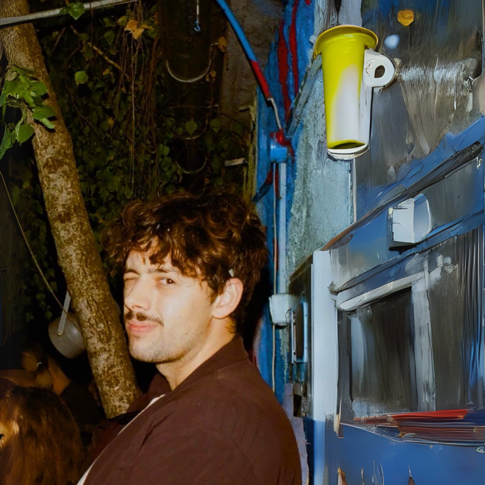

MARJAN V.
Počeo je 2019. vrtiti u malom baru gde je ubrzo nakon toga napravio svoj program: "House U Glavi (HUG)". Taj program je svakog četvrtka imao novu selekciju house traka, pa i novih dj-eva koji nisu imali iskustva! "Dj-ing je nešto što najviše volim, takođe i taj momenat selektovanja finog house-a je prelep!"" Uglavnom je Old House nešto što najviše voli, ali konstantno se ubacuju novi podžanrovi house muzike.



TRACKS

MARJAN V. // vol.1